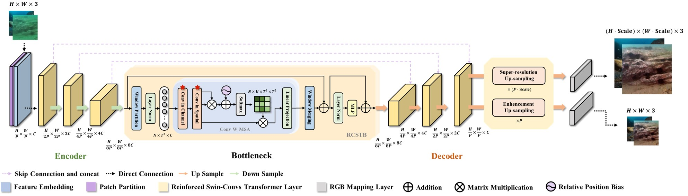

|
Researches
|
 |
Published! Reinforced Swin-conv Transformer for Simultaneous Underwater Sensing Scene Image Enhancement and Super-resolution
Tingdi Ren, Haiyong Xu*, Gangyi Jiang, Mei Yu, Xuan Zhang, Biao Wang, and Ting Luo
IEEE Trans Transactions on Geoscience and Remote Sensing
>> Use our proposed novel Reinforced Swin-Convs Transformer to tackle the challenge of restoring the degraded underwater images due to light absorption and scattering.
Explore Now: 
|
|